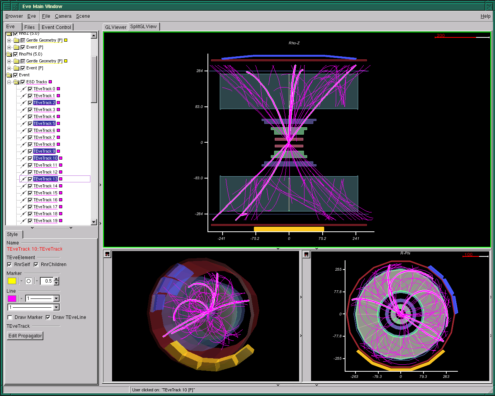
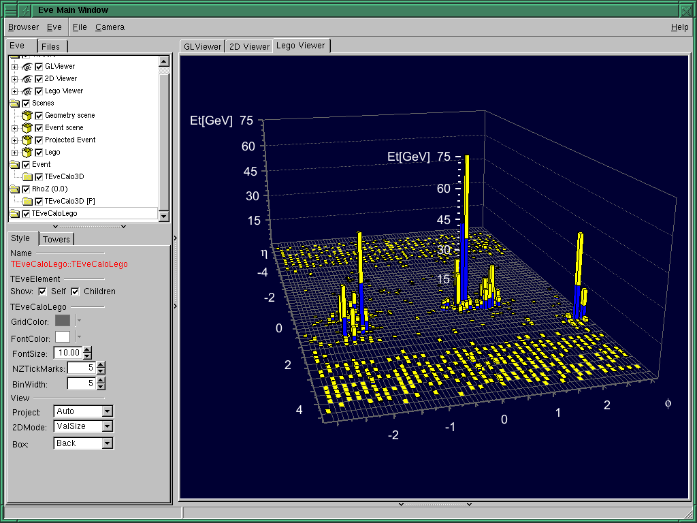
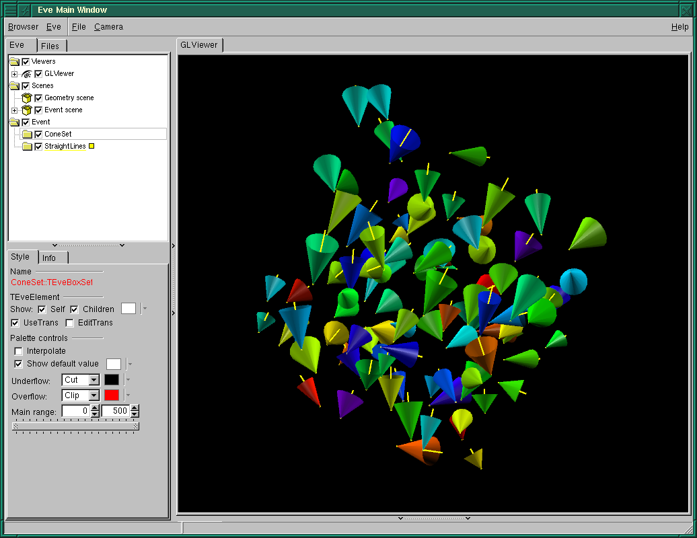

OpenGL
Major changes
- Reorganization of scene rendering in TGLViewer - render opaque
objects from all scenes first, then all transparent ones.
- Modularization of input event-handling in TGLViewer: all
event-handling is done by the TGLEventHandler class. One can
sub-class it now and modify behaviour of a given viewer. For
example, see TEveLegoEventHandler.
- Support highlighting of physical shapes for providing feedback and
showing selection.
Minor changes, fixes and improvements
- Improve saving of images from the GL-viewer so that the dialog
boxes and other windows do not result in black areas on the saved
image. The window must still be fully contained within the desktop.
- Improved camera controls. Three new orthographic cameras have
been added to TGLViewer, looking at the scene from another
side than the one present so far.
- Improved FTGL font management across rendering contexts and text
rendering support.
- New class TGLAxisPainter that can render 2D and 3D axes
via GL. For example see tutorials/eve/cms_calo.C.
Possible performance issues with ATI drivers (fglrx)
In late 2007 ATI switched to a new driver architecture. With these
drivers a significant degradation of GL performance in selection mode,
up to a factor of 50, was observed. Both linux and Windows drivers
were affected. The issue has been resolved in the latest driver
versions.
Eve
Major changes
- Support for multiple, parallel OpenGL views that can show different
projections of the same event.
- Provide object selection and feedback highlight across all GL-views and
list-trees.

- New classes for visualization of calorimeter data,
TEveCaloXYZ, see tutorials/eve/cms_calo.C. Available
representations: 3D-cylindrical view, projected views r-phi and rho-z,
and lego-view (with dedicated event handler allowing detailed
inspection of the data).

- Support for compound objects in view of selection, highlight and
color managament (see class TEveCompound).
- Optimize updates of GL-scenes by introducing change-stamping bits
into TEveElement. See methods AddStamp() and
StampXyzz().
- Added support for central management of visualization parameters
of objects. Instead of specifying visual attributes individually by
set-methods a single string tag can be used to retrieve all of them
with a single command, e.g.,
track->ApplyVizTag("MuonTrack"). The parameter-database can
be saved as a CINT script, edited manually and loaded. This provides more
flexibility as different users can share the same code to
instantiate visualziation objects but still override visualization
parameters independently. See TEveElement::CopyVizParams()
and TEveManager::*VizDB() methods for more information.
Minor changes, fixes and improvements
- Improved handling of projected elements.
- For fish-eye projections, allow fixing of compression scale
beyond given distance from the center.
- Add support for step-function scaling of 2D-projections. This
allows arbitrary magnification of concentric regions in r-phi and
rho-z views. See tutorial
tutorials/eve/projection_test_prescale.C.
- Path-mark type representing 2D clusters was added for
TEveTrack and TEveTrackPropagator classes.
- Add support for representing a set of arbitrary cones to
TEveBoxSet (see tutorials/eve/cone_test.C).

- TEveFrameBox now supports arbitrary 2d frame shapes -
user specifies individual points via SetQuadByPoints() function. See
tutorials/eve/quad_test.C::quad_test_circ() for an example.
- Consolidation of existing classes and code.